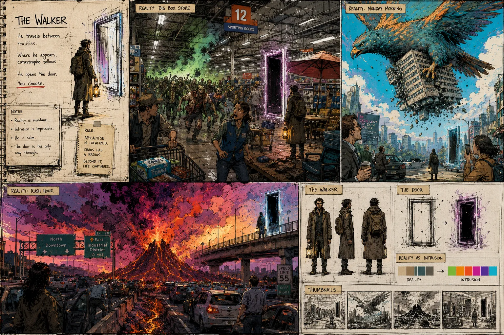
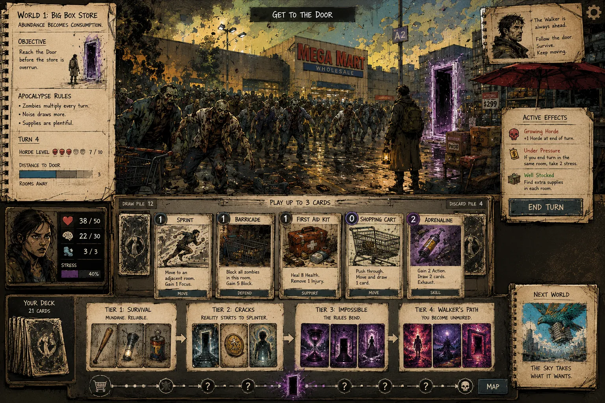

Genre: Narrative Deckbuilder / Roguelite
A mysterious being known as The Walker travels between realities. Wherever he appears, a localized apocalypse follows. The player must survive long enough to reach the door he leaves behind and follow him into the next world.
Player is an ordinary person trying to survive.
Cards increasingly violate causality and physics.
Resources are abundant. Zombie hordes continuously grow.
A colossal bird carries away buildings. Portions of the map disappear during play.
A volcano erupts beside rush-hour traffic. The map burns behind the player.
The deck evolves from mundane survival tools to impossible concepts. The player is not becoming stronger—they are becoming less anchored to normal reality.
By the final stages, cards represent powers associated with The Walker: Become the Shortcut, Carry a Horizon, and Exit the Scene.
Does The Walker create the apocalypses—or does following him long enough transform someone into the next Walker?

